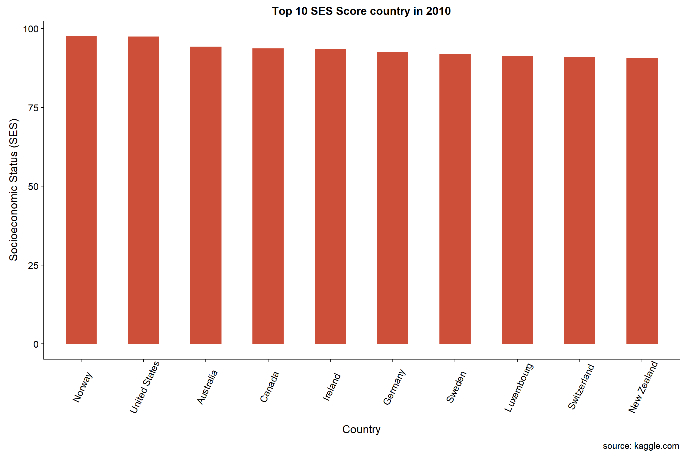

Data Exploration
This page explores the global trends of Socioeconomic Status and Economic Freedoms
Economic Freedom by Countries charts
- Economic Freedom of 138 countries for the year 1970, 1980, 1990, 2000 and 2010.
- It shows the trend of the degree of economic freedom by country.
options(repr.plot.width=8, repr.plot.height=10)
country_dataset <- read.csv("data/imp_ses_efw.csv")
country_dataset %>% filter(!is.na(ECONOMIC_FREEDOM) | !is.na(year)) %>%
ggplot(aes(year, ECONOMIC_FREEDOM, fill = ECONOMIC_FREEDOM, group = 1))+
geom_line()+
scale_color_viridis(option = "plasma",direction = -1, discrete=FALSE) +
facet_wrap(~country)+theme_bw()+
theme(legend.position = "none", axis.text.x = element_blank(),
strip.text.x = element_text(size = 6))+
xlab(" ") + ylab("")+ ggtitle("ECONOMIC FREEDOM INDEX OF THE WORLD 1970, 1980, 1990, 2000 and 2010")Socioeconomic Status Score by Countries charts
- SES of 138 countries for the year 1970, 1980, 1990, 2000 and 2010.
- It shows the trend of the score of SES by country.
options(repr.plot.width=8, repr.plot.height=10)
country_dataset <- read.csv("data/imp_ses_efw.csv")
country_dataset %>% filter(!is.na(SES) | !is.na(year)) %>% group_by(year) %>%
ggplot(aes(year, SES, fill = SES, group = 1 ))+
geom_line()+
scale_color_viridis(option = "plasma",direction = -1, discrete=FALSE) +
facet_wrap(~country)+theme_bw()+
theme(legend.position = "none", axis.text.x = element_blank(),
strip.text.x = element_text(size = 6))+
xlab(" ") + ylab("")+ ggtitle("SOCIOECONOMIC STATUS OF THE WORLD 1970, 1980, 1990, 2000 and 2010")
How Economic Freedom influences Socioeconomic Status of Countries based on region in 2010
country_dataset$continent <- countrycode(sourcevar =country_dataset[,"country"], origin = "country.name", destination = "continent")
df2010 <- country_dataset %>% filter(year == 2010)
ef2010ses <- ggplotly(ggplot(df2010, aes(ECONOMIC_FREEDOM, SES, name = country, size = popshare, width = 100, height = 100)) + geom_jitter(aes(color=continent), alpha=0.5) +
theme_bw()+ theme(legend.position=) +
theme(legend.title=element_blank()) +
xlab("Economic Freedom Index") + ylab("Socioeconomic Status (SES)") +
ggtitle("Economic Freedom Index against Socioeconomic Status 2010"))
ef2010sesHow Economic Freedom influences Socioeconomic Status of Countries based on region in 2000
df2000 <- country_dataset %>% filter(year == 2000)
ef2000ses <- ggplotly(ggplot(df2000, aes(ECONOMIC_FREEDOM, SES, name = country, size = popshare),
width = 400, height = 400) +
geom_jitter(aes(color=continent), alpha=0.5) +
theme_bw()+ theme(legend.position=) +
theme(legend.title=element_blank()) +
xlab("Economic Freedom Index") + ylab("Socioeconomic Status (SES)") +
ggtitle("Economic Freedom Index against Socioeconomic Status 2000"))
ef2000sesHow Economic Freedom influences Socioeconomic Status of Countries based on region in 1990
df1990 <- country_dataset %>% filter(year == 1990)
ef1990ses <- ggplotly(ggplot(df1990, aes(ECONOMIC_FREEDOM, SES, name = country, size = popshare)) + geom_jitter(aes(color=continent), alpha=0.5) +
theme_bw()+ theme(legend.position=) +
theme(legend.title=element_blank()) +
xlab("Economic Freedom Index") + ylab("Socioeconomic Status (SES)") +
ggtitle("Economic Freedom Index against Socioeconomic Status 1990"))
ef1990sesHow Economic Freedom influences Socioeconomic Status of Countries based on region in 1980
df1980 <- country_dataset %>% filter(year == 1980)
ef1980ses <- ggplotly(ggplot(df1980, aes(ECONOMIC_FREEDOM, SES, name = country, size = popshare)) + geom_jitter(aes(color=continent), alpha=0.5) +
theme_bw()+ theme(legend.position=) +
theme(legend.title=element_blank()) +
xlab("Economic Freedom Index") + ylab("Socioeconomic Status (SES)") +
ggtitle("Economic Freedom Index against Socioeconomic Status 1980"))
ef1980sesHow Economic Freedom influences Socioeconomic Status of Countries based on region in 1970
df1970 <- country_dataset %>% filter(year == 1970)
ef1970ses <- ggplotly(ggplot(df1970, aes(ECONOMIC_FREEDOM, SES, name = country, size = popshare)) + geom_jitter(aes(color=continent), alpha=0.5) +
theme_bw()+ theme(legend.position=) +
theme(legend.title=element_blank()) +
xlab("Economic Freedom Index") + ylab("Socioeconomic Status (SES)") +
ggtitle("Economic Freedom Index against Socioeconomic Status 1970"))
ef1970sesggplot(country_dataset, aes(ECONOMIC_FREEDOM, SES, size = popshare)) +
geom_jitter(aes(color=continent), alpha=0.5) +
theme_bw()+ theme(legend.position=)+
xlab("Economic Freedom") + ylab("Social Economic Status (SES)") +
ggtitle("Social Economic Status") +
# Here comes the gganimate specific bits
labs(title = 'Year: {closest_state}', x = 'Economic Freedom Index', y = 'Socioeconomic Status (SES)') +
transition_states(year, transition_length = 10, state_length = 10, wrap = TRUE) +
ease_aes('linear')Overview of Global Economic Freedom in 2010
l <- list(color = toRGB("black"), width = 0.5)
g <- list(showframe = FALSE,
showcoastlines = TRUE,
projection = list(type = 'Mercator'))
p2010 <- plot_geo(df2010) %>%
add_trace(z = ~ECONOMIC_FREEDOM, color = ~ECONOMIC_FREEDOM, colors = 'RdYlBu',
text = ~df2010$countries, locations = ~df2010$wbid, marker = list(line = l)) %>%
colorbar(title = 'Country' , tickprefix = 'EF') %>%
layout(title = 'Economic Freedom Index 2010')
#htmlwidgets::saveWidget(p2010, "charts/p2010.html")
#display_html('<iframe src="p2010.html" width=100% height=450></iframe>')
p2010Overview of Global Economic Freedom in 2000
p2000 <- plot_geo(df2000) %>%
add_trace(z = ~ECONOMIC_FREEDOM, color = ~ECONOMIC_FREEDOM, colors = 'RdYlBu',
text = ~df2000$countries, locations = ~df2000$wbid, marker = list(line = l)) %>%
colorbar(title = 'Country' , tickprefix = 'EF') %>%
layout(title = 'Economic Freedom Index 2000')
#htmlwidgets::saveWidget(p2000, "charts/p2000.html")
#display_html('<iframe src="p2000.html" width=100% height=450></iframe>')
p2000Overview of Global Economic Freedom in 1990
p1990 <- plot_geo(df1990) %>%
add_trace(z = ~ECONOMIC_FREEDOM, color = ~ECONOMIC_FREEDOM, colors = 'RdYlBu',
text = ~df1990$countries, locations = ~df1990$wbid, marker = list(line = l)) %>%
colorbar(title = 'Country' , tickprefix = 'EF') %>%
layout(title = 'Economic Freedom Index 1990')
#htmlwidgets::saveWidget(p1990, "charts/p1990.html")
#display_html('<iframe src="p1990.html" width=100% height=450></iframe>')
p1990Overview of Global Economic Freedom in 1980
p1980 <- plot_geo(df1980) %>%
add_trace(z = ~ECONOMIC_FREEDOM, color = ~ECONOMIC_FREEDOM, colors = 'RdYlBu',
text = ~df1980$countries, locations = ~df1980$wbid, marker = list(line = l)) %>%
colorbar(title = 'Country' , tickprefix = 'EF') %>%
layout(title = 'Economic Freedom Index 1980')
#::saveWidget(p1980, "charts/p1980.html")
#display_html('<iframe src="p1980.html" width=100% height=450></iframe>')
p1980Overview of Global Economic Freedom in 1970
p1970 <- plot_geo(df1970) %>%
add_trace(z = ~ECONOMIC_FREEDOM, color = ~ECONOMIC_FREEDOM, colors = 'RdYlBu',
text = ~df1970$countries, locations = ~df1970$wbid, marker = list(line = l)) %>%
colorbar(title = 'Country' , tickprefix = 'EF') %>%
layout(title = 'Economic Freedom Index 1970')
#htmlwidgets::saveWidget(p1970, "charts/p1970.html")
#display_html('<iframe src="p1970.html" width=100% height=450></iframe>')
p1970Findings:
For the past 5 decades,
- North America has remained the highest scoring region in terms of economic freedom.
- Before the 21st century, South American continent’s economic freedom were on the lower end and it improved later on.
- Ecocomic Freedom Index in Africa remained unsupportive since 1970.
- In the european region, western Europe have shown robust improvements, while eastern Europe have seen slower improvements.
- In Asia Pacific, economic freedom index were mixed.
Overview of Global Socioeconomic Status in 2010
l <- list(color = toRGB("black"), width = 0.5)
g <- list(showframe = FALSE,
showcoastlines = TRUE,
projection = list(type = 'Mercator'))
p2010ses <- plot_geo(df2010) %>%
add_trace(z = ~SES, color = ~SES, colors = 'RdYlBu',
text = ~df2010$countries, locations = ~df2010$wbid, marker = list(line = l)) %>%
colorbar(title = 'Country' , tickprefix = 'SES') %>%
layout(title = 'Soioeconomic Status Score 2010')
#htmlwidgets::saveWidget(p2010, "charts/p2010.html")
#display_html('<iframe src="p2010.html" width=100% height=450></iframe>')
p2010sesOverview of Global Socioeconomic Status in 2000
p2000ses <- plot_geo(df2000) %>%
add_trace(z = ~SES, color = ~SES, colors = 'RdYlBu',
text = ~df2000$countries, locations = ~df2000$wbid, marker = list(line = l)) %>%
colorbar(title = 'Country' , tickprefix = 'SES') %>%
layout(title = 'Soioeconomic Status Score 2000')
#htmlwidgets::saveWidget(p2000, "charts/p2000.html")
#display_html('<iframe src="p2000.html" width=100% height=450></iframe>')
p2000sesOverview of Global Socioeconomic Status in 1990
p1990ses <- plot_geo(df1990) %>%
add_trace(z = ~SES, color = ~SES, colors = 'RdYlBu',
text = ~df1990$countries, locations = ~df1990$wbid, marker = list(line = l)) %>%
colorbar(title = 'Country' , tickprefix = 'SES') %>%
layout(title = 'Soioeconomic Status Score 1990')
#htmlwidgets::saveWidget(p1990, "charts/p1990.html")
#display_html('<iframe src="p1990.html" width=100% height=450></iframe>')
p1990sesOverview of Global Socioeconomic Status in 1980
p1980ses <- plot_geo(df1980) %>%
add_trace(z = ~SES, color = ~SES, colors = 'RdYlBu',
text = ~df1980$countries, locations = ~df1980$wbid, marker = list(line = l)) %>%
colorbar(title = 'Country' , tickprefix = 'SES') %>%
layout(title = 'Soioeconomic Status Score 1980')
#htmlwidgets::saveWidget(p1980, "charts/p1980.html")
#display_html('<iframe src="p1980.html" width=100% height=450></iframe>')
p1980sesOverview of Global Socioeconomic Status in 1970
p1970ses <- plot_geo(df1970) %>%
add_trace(z = ~SES, color = ~SES, colors = 'RdYlBu',
text = ~df1970$countries, locations = ~df1970$wbid, marker = list(line = l)) %>%
colorbar(title = 'Country' , tickprefix = 'SES') %>%
layout(title = 'Soioeconomic Status Score 1970')
#htmlwidgets::saveWidget(p1970, "charts/p1970.html")
#display_html('<iframe src="p1970.html" width=100% height=450></iframe>')
p1970sesFindings:
For the past 5 decades,
1. North America region has shown stable socioeconomic status.
2. South America region has shown slight improvement in socioeconomic status.
3. African continent’s socioeconomic status dropped.
4. European region’s socioeconomic status remained steady.
5. Asia Pacific has diversed socioeconomic status.
Top ten countries with high socioeconomic status in 2010.
df2010_top10 <- head(df2010[order(-df2010$SES, -df2010$country), ], 10) # sort
ggplot(df2010_top10, aes(x = reorder(country,-SES), y=SES)) +
geom_bar(stat="identity", width=.5, fill="tomato3") +
labs(title="Top 10 SES Score country in 2010",
caption="source: kaggle.com") +
xlab("Country") + ylab("Socioeconomic Status (SES)") +
theme(axis.text.x = element_text(angle=65, vjust=0.6))
Top ten countries with high socioeconomic status in 2000.
df2000_top10 <- head(df2000[order(-df2000$SES, -df2000$country), ], 10) # sort
ggplot(df2000_top10, aes(x = reorder(country,-SES), y=SES)) +
geom_bar(stat="identity", width=.5, fill="tomato3") +
labs(title="Top 10 SES Score country in 2000",
caption="source: kaggle.com") +
xlab("Country") + ylab("Socioeconomic Status (SES)") +
theme(axis.text.x = element_text(angle=65, vjust=0.6))Top ten countries with high socioeconomic status in 1990.
df1990_top10 <- head(df1990[order(-df1990$SES, -df1990$country), ], 10) # sort
ggplot(df1990_top10, aes(x = reorder(country,-SES), y=SES)) +
geom_bar(stat="identity", width=.5, fill="tomato3") +
labs(title="Top 10 SES Score country in 1990",
caption="source: kaggle.com") +
xlab("Country") + ylab("Socioeconomic Status (SES)") +
theme(axis.text.x = element_text(angle=65, vjust=0.6))Top ten countries with high socioeconomic status in 1980.
df1980_top10 <- head(df1980[order(-df1980$SES, -df1980$country), ], 10) # sort
ggplot(df1980_top10, aes(x = reorder(country,-SES), y=SES)) +
geom_bar(stat="identity", width=.5, fill="tomato3") +
labs(title="Top 10 SES Score country in 1980",
caption="source: kaggle.com") +
xlab("Country") + ylab("Socioeconomic Status (SES)") +
theme(axis.text.x = element_text(angle=65, vjust=0.6))
Top ten countries with high socioeconomic status in 1970.
df1970_top10 <- head(df1970[order(-df1970$SES, -df1970$country), ], 10) # sort
ggplot(df1970_top10, aes(x = reorder(country,-SES), y=SES)) +
geom_bar(stat="identity", width=.5, fill="tomato3") +
labs(title="Top 10 SES Score country in 1970",
caption="source: kaggle.com") +
xlab("Country") + ylab("Socioeconomic Status (SES)") +
theme(axis.text.x = element_text(angle=65, vjust=0.6))